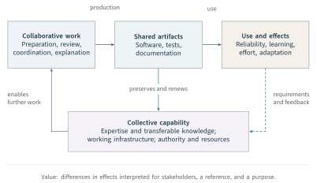
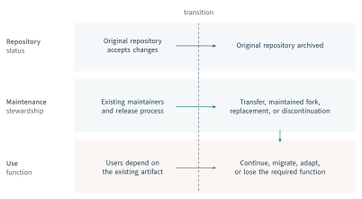

A newcomer submits a patch. Its usefulness depends on work that the patch itself does not contain: someone has identified a problem, provided a reproducible example, explained the architecture, reviewed the change, and maintained a release process. The resulting improvement may be used far from the repository in which it was recorded. The newcomer may also acquire knowledge that becomes useful in another project. An account of value must follow these connections while remaining precise about which effects have actually been established.
Chapter 1 established the vocabulary for that inquiry: evaluated and affected objects, conditions, reference alternatives, stakeholders, purposes, and differences in effects. This chapter explains what those distinctions mean for open collaboration. Its organizing concept is collective capability: the capacity of an arrangement of people, artifacts, and institutions to create, use, adapt, and maintain software. Collaboration exercises that capability and can renew it. Value concerns the consequences for stakeholders; sustainability concerns the conditions under which the relevant capabilities and benefits can continue.
Our Activity research, the development of OpenRank, and the OpenRank Leaderboard deployment supply complementary evidence for this account. The doctoral studies connect these results to the distribution of work, project continuity, and the infrastructure of evaluation (Xia, 2024; Zhao, 2025). We use these findings to develop a sequence of distinctions: recorded activity and contribution; network influence and recognition; effects and value; repository survival and capability continuity; measurement and the consequences of its use. The analytical formulations in this chapter are a synthesis developed for the book. They organize the evidence and expose assumptions rather than claim additional experiments.
The argument proceeds from collaborative production to evaluation design. Chapters 4–6 provide the detailed measurements, algorithms, and deployment results. Here the same research establishes why those methods are needed, what they can represent, and where further evidence is necessary. This connection gives Open Source Evaluatology a substantive foundation in the work it seeks to evaluate.
2.1 Activity, Contribution, and Collective Capability#
From recorded behaviour to collaborative work#
Open source production brings together contributions that need not originate under a common employer or a single plan. Commons-based peer production explains the coordination of distributed information work; the private-collective innovation model explains how contributors can benefit while making knowledge available to others (Benkler, 2002; von Hippel and von Krogh, 2003). Open superposition identifies a further mechanism: independently motivated work can accumulate in layers that make subsequent work possible (Howison and Crowston, 2014). These accounts establish that understanding an individual action requires attention to the undertaking in which it participates.
Our Activity research makes this problem operational. It brings several kinds of collaboration behaviour into a common measurement procedure instead of equating participation with committed code (Xia et al., 2022). The thesis formulation selects comments, issue creation, pull-request creation, pull-request review comments, and merged pull requests within a declared observation period (Xia, 2024, Section 5.2.1). These categories describe observable participation in a particular workflow. Their selection and weights are modelling choices; the event stream contains other behaviours, and substantial work occurs beyond that stream. Chapter 4 develops the distinctions among the historical formulations and the current measurement specification.
The theoretical importance of this work is the separation of activity from any one technical artifact. A problem report, a review, and a patch can each support production, although only one may appear as a new code change. Earlier repository research likewise incorporated communication and project-support actions into contribution measurement (Gousios et al., 2008). The Activity studies extend this perspective through a consistent behavioural representation and large-scale empirical analysis. They make the composition and concentration of recorded work available for investigation.
An activity is something done. An event is a record generated by a particular way of doing or recording it. A contribution is work considered in relation to an undertaking that it supports. An artifact is something produced or maintained, such as a program, test suite, or explanation. An outcome is a resulting state or change of interest. These distinctions matter even when a platform assigns the same label to several of them. A merged pull request records a workflow outcome; it does not by itself establish successful deployment, a benefit to users, or the future maintainability of the change.
Conversely, preventing an unsuitable change from being merged can protect reliability. An explanation may let several people solve similar problems without opening further issues. Such work can reduce subsequent event counts while improving the undertaking. The appropriate interpretation depends on the mechanism through which the activity affects artifacts, people, or production conditions. It cannot be supplied by the direction of a count alone.
The distinction also changes the interpretation of concentration. The Activity studies identify uneven participation and different behavioural profiles among people and automated accounts (Xia et al., 2022; Xia, 2024). Concentration is evidence about a distribution under a specified measure. It becomes evidence of vulnerability only when the concentrated work is necessary, difficult to substitute, and exposed to a relevant disruption. A heavily automated maintenance task and a release procedure known to one person can produce concentrated records for quite different reasons. Neither the number of accounts nor the inequality of their scores fully describes the community’s ability to continue.
Capability as a property of an arrangement#
A capability is collective when its exercise depends on an arrangement of people, artifacts, and rules. Individual expertise is insufficient if nobody has release authority, the tests cannot be run, or the documentation does not make the work transferable. A nominally large contributor population can therefore leave essential functions dependent on one person. Collective capability concerns what the arrangement can accomplish under stated conditions when the relevant work is required.
Figure 2.1 connects this account to Evaluatology. Activities change artifacts and the conditions of future work. Use exposes artifacts to requirements and produces consequences for affected objects. Some consequences matter immediately; others depend on later adoption, learning, or maintenance. The figure is a conceptual account of these relationships, not a fitted causal model or a claim that every activity follows one sequence.

The evaluated object determines which relationship is being examined. If a patch is the object, a software component may be affected first and a downstream service later. If a mentoring arrangement is the object, newcomers’ capabilities and the review process may be affected first. If a recognition policy is the object, allocation of attention and subsequent work may be affected. Evaluatology’s object causal model provides the vocabulary for making these relationships explicit (Zhan et al., 2026, Chapters 8 and 11). Selecting a repository’s records does not establish that all relevant affected objects lie within that repository.
Capability renewal gives learning a place within production. Knowledge acquired while resolving an issue may enable a participant to handle a later issue or teach another participant. Documentation can preserve part of this knowledge, while permissions and governance determine who can act on it. Research on sustained participation links situated learning and the development of a community identity to continued involvement in the studied project (Fang and Neufeld, 2009). That finding supports attention to learning processes; it does not make a return visit or an additional comment a direct measure of acquired capability.
Complementarity and marginal contribution#
Complementarity can be stated precisely in a deliberately simple production model. Suppose useful changes require both preparation and qualified review. Let and be the respective capacities during a fixed period, expressed in comparable units of work. Assume tasks are homogeneous, prepared work is available to reviewers, and release capacity and technical quality impose no additional constraint. Completed work is then
This is an analytical illustration, not a fitted model of an observed community. Its restrictive assumptions make the role of a bottleneck visible.
If review is the bottleneck, so that , an increase in review capacity changes output by
Under the same condition, increasing preparation capacity alone produces no additional completed work in this period. Once , the roles reverse. The marginal effect of an otherwise identical unit of work depends on the complementary capacities already present. It is not an intrinsic constant attached to the event category.
This observation clarifies the role of fixed behaviour weights. A weight that treats all reviews alike can help describe participation or implement a recognition policy. It cannot represent marginal output across every capacity condition. A zero marginal effect within one period also does not imply that the work is worthless: prepared work may remain available, reveal requirements, or become useful when another constraint is relaxed. The reference alternative and horizon determine which difference is being evaluated.
Enabling work can change the production conditions themselves. Better tests may reduce review effort; a documented release procedure may allow another participant to perform it. A measurement that only adds events while holding these conversion conditions fixed will miss part of the mechanism. The implication for our research programme is substantive: behavioural measurements need a relational and organizational interpretation when they are used to assess contribution. OpenRank develops the relational part of that response, while value and sustainability require an account of the capabilities and consequences at stake.
2.2 Influence and Recognition in Collaboration Networks#
Why the relationships matter#
The OpenRank Leaderboard study provides a concrete example of work that a code-centred account can understate. In its selected cases, a maintainer in the spring-cloud-alibaba project contributed five commits but posted 62 comments across 50 issues and pull requests. The developer ranked fifth under the reported community OpenRank calculation. The source interprets this pattern as coordination across the project’s work items (Zhao et al., 2024, Section 4.1 and Table 4). Chapter 5 preserves the full comparison, including the other contributor and the ranks under alternative measures.
The case supports a specific claim: a relational representation can make coordination visible when commit volume alone provides an incomplete account. It does not establish the quality of every comment, the maintainer’s causal effect on all resolved problems, or the optimal allocation of recognition. These questions require additional observations. The distinction is productive because it identifies what the network representation contributes and what remains to be evaluated.
In the same study, a maintainer reported discovering an issue responder whose work had been overlooked. The leaderboard drew attention to relationships formed while resolving community issues. This observation concerns visibility and recognition, rather than an independently measured increase in software quality. Studies of explicit attribution systems similarly show that acknowledgement practices can reveal work omitted by commit-based accounts (Young et al., 2021). The implication is that the record of contribution depends partly on the practices through which work becomes visible.
Table 2.1 gathers the constructs developed in this chapter and the empirical material that anchors them. The studies supply different kinds of evidence. A distribution of actions, a selected developer case, a repository comparison, and an interview do not have interchangeable evidential roles. Their joint contribution is to specify the relationships that an evaluation must examine.
| Construct | Evidence in our studies | Interpretation and boundary |
|---|---|---|
| Activity | Multiple behaviours, their distribution, and human/automated participation (Activity study; Xia, Ch. 5). | Recorded participation under a declared selection, weighting, and period; not a direct measure of benefit. |
| Contribution | Coordination across issues and pull requests, including work understated by commits (ORL, Section 4.1). | Work understood in relation to a collaborative undertaking; content and outcomes require further evidence. |
| Influence | Ecosystem and community graph constructions (OpenRank; Zhao, Chs. 5–6). | Model-dependent relational standing; graph scale and priors determine its interpretation. |
| Value | Different repository purposes despite shared metric names (position paper, Table 4). | Stakeholder interpretation of effects relative to a reference; a ranking does not establish these effects. |
| Sustainability | Archival explanations, alternatives, transition practices, and linked forks (Xia, Ch. 4). | Continuity of a specified function; a recorded transition does not establish successful continuation. |
Sources: Xia et al. (2022); Xia (2024); Zhao et al. (2024); Zhao (2025); Han et al. (2026a); Han et al. (2024). The interpretations are this chapter’s synthesis. The theses and papers belong to an overlapping research programme; they are not counted as independent replications.
The scale and meaning of influence#
OpenRank represents collaboration through typed entities, relationships, and prior information. Its interpretation depends on which of these enter the model. At ecosystem scale, developer–repository relations support an account of influence within a wider collaboration network. At community scale, developer–issue/pull-request relations support an account of contribution within a project’s work process (Han et al., 2026a; Zhao, 2025). These constructions answer related but distinct questions. A repository’s ecosystem position and a developer’s contribution to one community cannot be treated as observations on a common universal scale.
The distinction follows a broader principle of network analysis. A centrality measure has meaning in relation to assumptions about what moves through the network and how its connections participate in that process (Borgatti, 2005). Developer-network research also shows that relational representations can reveal coordination and positional stability beyond a count-based role classification (Joblin et al., 2017). For OpenRank, the corresponding obligation is to explain the substantive role of each relation, the allocation of prior information, and the boundary within which scores are compared.
The network is a representation of collaboration, not the collaboration itself. An issue thread may connect people who coordinate several activities, while a private design meeting leaves no public edge. A connection can carry useful information or repeated disagreement. The score expresses the consequences of the selected representation and propagation rule. Evidence about the meaning and quality of the underlying work remains necessary whenever a stronger interpretation is attached to it.
This is why the capacity example in Equation 2.2 motivates relational context without deriving a network algorithm. The example shows that contributions can depend on complementary work. OpenRank allows a score to depend on surrounding relations. Establishing that a particular propagated score estimates a causal marginal effect would require a further model and evidence about substitution, dependencies, and outcomes. Chapter 5 examines the algorithm on its stated terms rather than assuming this equivalence.
Contribution does not uniquely determine credit#
A collective outcome and an allocation of credit are different objects of inquiry. Even perfect knowledge of an outcome would not automatically determine how it should be shared among complementary contributors. Recognition may express effort, responsibility, effectiveness, or a community’s intention to encourage neglected work. The choice is part of an evaluation’s purpose and standards.
A two-person example makes the issue explicit. Suppose a writer and a reviewer are jointly necessary to produce a benefit , expressed on a stipulated scalar scale. Let be the benefit attainable by coalition . Assume
Conservation of the total alone permits every allocation
The outcome does not choose . An allocation rule must add conditions. In this symmetric example, the Shapley value assigns equal shares under its axioms (Shapley, 1953). That result illustrates the role of an explicit rule; it does not imply that real collaboration provides observed coalition values or that symmetry is always an appropriate standard.
OpenRank computes relational scores without requiring the coalition values in Equation 2.3. Its priors, relation weights, and propagation settings encode choices about the representation of contribution. A community can use the resulting scores to inform recognition, but a score, a displayed rank, an award of points, and a material reward remain distinct objects. They may be connected by additional rules. Changing a reward rule can change incentives without changing the network calculation; changing the graph can change a ranking without changing the underlying policy purpose.
This separation makes the evaluation inspectable. One can examine whether the records cover relevant work, whether the model represents the intended relationships, and whether the recognition rule serves the community’s purpose. A positive answer to one question does not settle the others. The deployment evidence in Chapter 6 becomes especially informative once these objects are distinguished.
2.3 Effects, Stakeholders, and Value#
Purpose determines the question#
The repository comparison in our position paper provides a compact empirical illustration (Han et al., 2024, Table 4). In September 2022, the first-contributions tutorial and the ice-next development repository exhibited sharply different patterns of participation (Table 2.2). The first repository helps newcomers make an initial contribution. The second historical case concerned development of the next major version of ICE. Their event totals therefore need to be interpreted in relation to different undertakings.
| Measure | ice-lab/ice-next | |
|---|---|---|
| Activity | 7035.14 | 162.95 |
| Activity rank () | #6 | #5472 |
| OpenRank | 481.63 | 27.99 |
| OpenRank rank () | #13 | #2290 |
| Participants | 1631 | 11 |
| Open Issue | 18 | 30 |
| Open PR | 1636 | 48 |
Source: Han et al. (2024), Table 4. All values and ranks are unchanged. Activity and OpenRank retain the source’s definitions and units; ranks refer to the respective source rankings. The repository names identify the historical cases. A rank difference is not a measured difference in learning, software quality, or stakeholder value.
For the introductory repository, repeated first contributions are consistent with its educational purpose. For a software-development project, a smaller group of experienced contributors may be consistent with intensive design and implementation work. The table alone establishes neither successful learning in the first case nor superior engineering in the second. It shows why the same behavioural categories can have different substantive meanings. The next question is which effects each undertaking is intended to produce and what evidence would establish them.
The reported values retain their historical definitions and rankings. They have not been recalculated using a later Activity or OpenRank implementation. This matters because later formulations can change normalization, aggregation, graph construction, or the population represented. Chapter 4 treats the Activity lineage, and Chapter 5 distinguishes the OpenRank models. A common metric name is insufficient evidence that two values are comparable.
Purpose guides interpretation without making it arbitrary. An educational purpose requires evidence of learning or newly acquired capability. A software-use purpose requires evidence about the artifact and its consequences in use. A maintenance purpose requires evidence about the work and resources needed to continue service. A favourable score cannot substitute for these observations merely because the repository has a plausible mission.
From differences in effects to a value profile#
Evaluatology defines value through the consequences, for stakeholders, of differences between the effects of an evaluated object and those of a reference object (Zhan et al., 2026, Section 11.1). Its value function forms a composite scalar quantity from multidimensional differences in effects. Chapter 1 retained this object–effect relation while allowing a multidimensional assessment when scalar valuation has not been justified. We follow the same distinction: characterize effects and their stakeholder meaning before deciding whether and how they can be aggregated.
The notation introduced in Chapter 1 remains Here is the evaluated object or arrangement, the affected objects together with the outcome quantities considered, the conditions, the reference alternative, the horizon, the stakeholders, and the purpose. Stakeholder belongs to . An affected object and a stakeholder play different roles: a component can be affected by a patch, while a service operator bears consequences of using that component. A person can occupy both roles in an educational or organizational evaluation.
For a collaborative undertaking, let denote the specified effect difference relevant to stakeholder on dimension . We call
a stakeholder effect profile. The dimensions might include review delay, effort, learning, reliability, or adaptation burden. Each entry retains its unit, definition, and uncertainty; unobserved entries remain unknown. The profile organizes the relevant effects. It is not a new estimator, an assertion that every difference is causal, or permission to add quantities with incompatible meanings.
Table 2.3 connects such effects to possible standards. Stakeholders are identified by their exposure to consequences, not solely by visibility in platform data. A downstream operator can bear adaptation costs without opening an issue. A future maintainer can inherit a difficult design without appearing in the measurement window. The evaluation need not study every possible party, but its boundary must follow the stated purpose and consequential omissions must be identified.
| Affected party | Effects to investigate | Possible value standard |
|---|---|---|
| Newcomers | Acquired capability, access to feedback, effort required to participate. | Meaningful learning and an accessible route to independent work. |
| Maintainers | Review burden, interruptions, delegation, reliability of essential processes. | Useful contributions with an acceptable continuing workload. |
| Downstream users | Functionality, reliability, compatibility, cost of adaptation. | Dependable service and manageable transition costs. |
| Supporting organizations | Capabilities obtained, resources committed, dependence on external work. | Benefits and obligations consistent with the organization’s purpose. |
| Future participants | Transferable knowledge, available authority, inherited technical obligations. | A credible ability to continue, adapt, or retire the undertaking. |
Analytical examples, not observed study results. The affected objects may include people, software components, or organizational processes. Standards must be justified for the actual stakeholders and purpose; the table does not prescribe universal thresholds.
Stakeholder disagreement can arise from different conditions or different standards. Two operators may incur different migration costs because their systems differ. Two maintainers may agree about the workload increase and disagree about whether it is acceptable. The first disagreement requires better characterization of effects and conditions; the second requires explicit discussion of priorities and responsibilities. More precise event counts alone cannot settle both.
Creation, capture, and acceptable trade-offs#
Value creation and value capture describe different relationships. A collaborative arrangement can make useful capabilities available while different parties obtain benefits through use, learning, employment, or complementary services. Strategy research distinguishes use value from exchange value and examines the conditions of capture (Bowman and Ambrosini, 2000). The private-collective model shows why private benefits can coexist with collective provision (von Hippel and von Krogh, 2003). These concepts help identify questions about distribution; they do not establish that observed contributions are proportional to captured benefits.
Three inquiries follow. Creation concerns which capabilities and outcomes an arrangement makes possible. Distribution concerns who receives benefits and bears costs. Continuity concerns whether the work and resources needed to reproduce the capabilities remain available. These inquiries are connected. A distribution that repeatedly places essential burdens on participants unable to sustain them may weaken future production. Yet evidence of widespread use, by itself, does not establish adequate maintenance capacity or an acceptable distribution of obligations.
A scalar valuation is useful when its trade-offs are defensible. Suppose an arrangement shortens review delays while increasing maintainer effort. A weighted total can express an agreed trade-off once both dimensions and their scales have been justified. It cannot supply that justification. If the community has a binding workload ceiling or a minimum reliability requirement, feasibility should be considered before an overall ranking.
For candidate arrangements in , a simple statement is
The measure is oriented so that larger values satisfy the requirement, and is its threshold. A workload ceiling can be expressed by reversing the sign of workload. The notation supplies neither the threshold nor evidence that it has been met. Where several parties’ requirements are binding, the intersection of their feasible sets identifies jointly acceptable candidates. An empty intersection exposes a substantive conflict; missing evidence leaves feasibility unresolved.
These formulations extend the value account by preserving the structure of a judgment before aggregation. They are especially useful when Activity or OpenRank informs a decision involving several parties. The metric can provide evidence about observed participation or represented relations. The evaluation must still establish which consequences matter, which requirements are binding, and whether the available evidence supports the proposed use.
2.4 Time, Continuity, and Sustainability#
Continuity of what?#
Sustainability requires a specified object of continuation. A repository may remain writable while depending on an exhausted maintainer. Another may be archived after its functionality has moved to a maintained successor. A component may need few changes because it is stable, while a similarly quiet component may be unable to respond to known defects. These possibilities make repository activity informative but insufficient as a general criterion of sustainability.
The archive study in Xia’s doctoral thesis gives this distinction an empirical basis. Starting from the 10,000 GitHub repositories with the most stars in April 2022, the study identified 406 archived repositories and excluded 45 that were not software projects, leaving 361 archived software projects (Xia, 2024, Chapter 4). The population is selected by popularity and archival status. Its findings concern the observed projects and their recorded explanations; they are not an estimate of the prevalence of failure throughout open source.
The study documents several relationships between archival and continued use: replacement by another project, reorganization, migration, and continuation through forks. It also examines communication and transition practices. These observations extend earlier research on reasons for project discontinuation and associations with maintenance practices (Coelho and Valente, 2017). For evaluation, the important implication is that an administrative status and a substantive outcome need to be distinguished. The archival event marks a change at one boundary; the relevant capability may have ended, moved, or been replaced.
Figure 2.2 illustrates the resulting evaluation problem. The upper track follows a repository; the lower tracks follow maintenance arrangements and users’ ability to continue their work. The alternatives are conceptual mechanisms informed by the archive study, not estimated transition probabilities. Whether a transition succeeds requires evidence beyond a link to a successor.

Evidence of a transition and evidence of continuity#
For its analysis of transition practices, the study retained 237 repositories with observed practices. Among these, 82 recommended alternatives and 22 linked to 27 forks. Twelve of those 27 forks had updates during the preceding six months (Xia, 2024, Section 4.3.2). The units and denominators differ: repositories recommend alternatives or forks, while updates are observed for individual forks. These counts show that documented pathways beyond the original repository existed. They do not establish the success rate of migration, users’ adoption of the forks, or a causal effect of the recommendations.
A recommendation identifies an option. A migration guide can reduce the work required to use it. Maintainer transfer can preserve knowledge and authority. Continued updates show some subsequent activity. Compatibility, timely support, and the ability to meet users’ requirements are further properties. Treating all these observations as equivalent evidence of sustainability would obscure the mechanism that the evaluation needs to examine.
The thesis also reports attempts to seek additional help and describes the difficulty of translating interest into a successful handover. This reinforces the capability account: continuity depends on a workable combination of expertise, access, responsibility, and resources. Adding names to a contributor list cannot by itself demonstrate that the release process or security response can continue. The appropriate evidence concerns the particular functions at risk.
Time changes the interpretation of both benefits and burdens. An intensive mentoring period can increase present workload while enabling later delegation. A release can generate adoption benefits and continuing support obligations. A short observation window may capture the cost and miss the renewal, or capture the adoption and miss the accumulating burden. The horizon therefore belongs to the evaluation question, rather than being chosen solely because a monthly series is easy to obtain.
Renewal, substitution, and the ecosystem boundary#
We use sustainability to mean the capacity to continue or renew a specified collaborative function and its relevant benefits over a stated horizon under stated conditions. This definition includes continuity through replacement when replacement preserves the function at issue. It does not presume that every project should persist indefinitely. An orderly retirement can be appropriate when requirements have changed or a better supported alternative becomes available.
Renewal can involve retaining knowledgeable participants, preparing successors, improving documentation, reducing recurring effort, or securing resources for essential work. These mechanisms are not interchangeable. A new participant with limited permissions may not substitute for a release maintainer. Automation may relieve repetitive work while creating another dependency that needs maintenance. A defensible sustainability assessment identifies the function, the means of renewal or substitution, and the conditions under which they are available.
The boundary may also extend through dependencies. Research on software packaging ecosystems demonstrates that direct and transitive dependencies expose projects to developments elsewhere in the network (Decan et al., 2019). A repository’s apparent stability can therefore depend on work supplied by other communities. Conversely, a small project’s retirement can impose substantial adaptation work on downstream users. Local activity and ecosystem consequences describe different objects and scales.
The Activity and OpenRank studies provide useful observations within this account. Activity can characterize recorded participation over time. Relational analysis can identify represented concentrations and connections that warrant investigation. OpenDigger makes recurring observations and contextual comparisons operational (Wang et al., 2026). The step from those observations to sustainability requires evidence about essential functions, burdens, alternatives, and continuity. Our contribution is to specify that step rather than collapse it into another name for a high score.
2.5 The Consequences of Evaluation#
Evaluation enters the collaboration process#
A measure used privately for analysis and the same measure published as a leaderboard can have different consequences. Publication makes comparisons visible. Recognition rules can direct attention toward particular work, invite participants to interpret their standing, and change the way work is recorded. Research on public rankings describes such responses as reactivity (Espeland and Sauder, 2007). In open source, platform transparency already allows participants to infer interests and expertise from visible activity (Dabbish et al., 2012). A contribution leaderboard adds an explicit evaluative representation to that setting.
The OpenRank Leaderboard deployment provides evidence about these responses. Its interview study involved 18 participants: seven maintainers and eleven external contributors. The coding recorded 13 mentions of moving discussions into public channels and eight of splitting work into smaller independent pull requests (Zhao et al., 2024, Section 4.2). These are frequencies of interview themes, not mutually exclusive groups or population estimates. The detailed thematic evidence and deployment comparisons are presented in Chapter 6.
The reports matter for the interpretation of subsequent measurements. Moving a discussion from a private channel to an issue thread can increase observed events without an equivalent increase in total work. Dividing a change into independently reviewable pull requests can change both the recording unit and the work process. An increase in the metric may therefore reflect greater visibility, a different workflow, additional work, or some combination. The event total alone does not identify which mechanism occurred.
The reports also suggest plausible benefits. Public discussions can leave reusable explanations; smaller independent changes can facilitate review. Those are mechanisms to investigate, rather than effects established by the interview counts. Evaluation must connect the reported changes to evidence about useful work, participant burden, artifact quality, or later capability. This preserves the deployment’s contribution without converting favourable interpretations into causal findings.
Recognition can reveal work and reshape it#
The earlier issue-responder case illustrates a constructive consequence: an evaluation can draw attention to work that a maintainer had overlooked. The behavioural reports reveal a further consequence: participants may adapt to the representation through which recognition is assigned. Both are relevant to the field. Better visibility can support a fairer discussion of contribution, while selective visibility can privilege activities that are easier to record.
The ORL interviews include requests to consider contribution content as well as behaviour and relationships (Zhao et al., 2024). Such requests identify a boundary of the model. A relational representation can broaden an account beyond code volume while still missing the quality, difficulty, or necessity of individual work. Participant endorsement supplies evidence about acceptability and perceived correspondence; it does not independently validate every proposed interpretation of a score.
Motivation should likewise be studied at the level warranted by the evidence. An observed change in behaviour does not establish why a person changed it. Open source participation can involve learning, professional responsibility, enjoyment, reputation, and commitment to a community’s standards. Research on motivation and social practice provides an account of how these concerns can extend beyond immediate rewards (von Krogh et al., 2012). The evaluation design should therefore distinguish reported reasons, observed actions, and the incentive rules actually in place.
This distinction is especially important when evidence is assembled across versions of a deployment. A later description of points or rewards cannot be assigned retrospectively to every earlier observation period. The publication of a score, the announcement of a recognition rule, and the introduction of a reward may occur at different times. Chapter 6 preserves those distinctions in reconstructing the deployment. Here they establish a theoretical requirement: the use of an evaluation is part of the conditions under which subsequent evidence is generated.
The evaluation procedure becomes an evaluated object#
Evaluatology permits an evaluation approach itself to become the object of evaluation, with its results and affected parties examined in turn (Zhan et al., 2026, Section 8.7.4). Open collaboration gives this recursive inquiry a concrete setting. A contribution procedure can be assessed for the adequacy of its representation, the credibility of the interpretations it supports, and the consequences of its deployment. These questions concern different aspects of the same practice.
One comparison may ask whether a network representation reveals coordination that code counts miss. Another may ask whether participants regard the ranking as credible. A third may ask whether publishing it improves collaboration under an acceptable workload. Evidence for the first two questions can motivate the third, but cannot answer it on its own. Assessment theory’s treatment of validity as evidence for interpretations and uses is useful here (Messick, 1995). The intended use determines which additional evidence is needed.
The practical implication is to retain the connection between measurement version, deployment conditions, and observed responses. If publication changes what is recorded, a subsequent series is partly an observation of the evaluation’s effects. If the algorithm changes, the meaning of the score may change as well. If the reward changes, incentives may change even with an identical score. These are separate changes that a continuing evaluation must be able to distinguish.
2.6 Implications for Evaluation Design#
The chapter’s argument can now be stated in four propositions. They are analytical conclusions from the distinctions developed here, informed by the team’s empirical studies. Their scope is specified so that they can guide investigation without being mistaken for universal empirical laws.
Four propositions for Open Source Evaluatology#
Contribution is conditional on an undertaking. Recorded actions acquire a contribution interpretation through the work, artifacts, or capabilities they support. Where production requires complementary capacities, an action’s marginal effect depends on those capacities, the reference alternative, and the horizon. Activity provides a systematic account of selected behaviours; the production mechanism determines which evaluative claims that account can support.
Relational influence and stakeholder value are distinct constructs. A network representation can reveal coordination and allocate influence according to an explicit model. Value further requires an account of effects on stakeholders under a specified purpose. The selected OpenRank cases demonstrate the interpretive gain from relationships; the repository-purpose comparison demonstrates why a ranking cannot choose the purpose or value standard. A recognition policy adds another rule linking evidence to an allocation.
Sustainability is relative to a function, boundary, and horizon. An assessment of continuity must identify what is expected to continue and under which conditions. The archive study supplies evidence of replacement, migration, and fork pathways beyond an original repository. It supports investigating capability continuity across boundaries; it does not establish that every pathway preserves the benefits or that every archived project represents a successful transition.
The use of evaluation can change its subsequent evidence. When an evaluation becomes visible or consequential, participants can change their actions and their recording practices. The ORL interviews identify reported responses consistent with these mechanisms. A subsequent change in a score therefore needs interpretation in relation to the deployment, rather than being treated automatically as an improvement in the underlying undertaking.
These propositions specify how Evaluatology’s distinctions among objects, conditions, effects, and value apply to distributed work. The empirical programme makes their consequences observable and identifies where the general theory needs more detailed specification.
From substantive concepts to an answerable comparison#
Chapter 3 turns this account into evaluation designs. The common question structure is . The present chapter supplies its substantive content. An investigator must select the collaborative function and the claim about it, identify affected objects and stakeholders, choose an appropriate reference, and justify a horizon. The observations and model then need to match that claim.
For Activity, the central design question is which behaviours, entities, and periods support the intended account of participation. For OpenRank, it is which relations and prior information represent influence or contribution at the chosen scale, and which evidence can assess that interpretation. For the leaderboard, it is which procedure was deployed, who was exposed to it, and what comparisons can distinguish its consequences from other changes. These are the completed research settings that anchor the methodological discussion in Chapter 3.
The distinction among claims also determines what would count as contrary evidence. A contribution interpretation is weakened if essential work is systematically absent from its record. A relational interpretation is weakened if relevant coordination is omitted or if scores mainly reflect unintended construction choices. A continuity claim is weakened if the proposed successor cannot perform the required function. A claim of beneficial deployment is weakened if the observed increase is explained by recording changes while the relevant burdens or outcomes deteriorate.
These possibilities make the theory useful for design. They lead from a favourable-looking number to an explicit comparison whose interpretation can be examined. They also return practical findings to the theory: an overlooked issue responder refines the account of contribution, an archived repository with a maintained successor refines the object of continuity, and a move to public discussion refines the relationship between measurement and the measured system. Open Source Evaluatology develops through this exchange between a general evaluative framework and evidence about how open collaboration actually works.
References#
Benkler, Y. (2002). Coase’s penguin, or, Linux and the nature of the firm. Yale Law Journal, 112, 369–446. https://yalelawjournal.org/article/coases-penguin-or-linux-and-the-nature-of-the-firm.
Borgatti, S. P. (2005). Centrality and network flow. Social Networks, 27(1), 55–71. DOI: 10.1016/j.socnet.2004.11.008.
Bowman, C., and Ambrosini, V. (2000). Value creation versus value capture: Towards a coherent definition of value in strategy. British Journal of Management, 11(1), 1–15. DOI: 10.1111/1467-8551.00147.
Coelho, J., and Valente, M. T. (2017). Why modern open source projects fail. In Proceedings of the 2017 11th Joint Meeting on Foundations of Software Engineering, pp. 186–196. ACM. DOI: 10.1145/3106237.3106246.
Dabbish, L., Stuart, C., Tsay, J., and Herbsleb, J. (2012). Social coding in GitHub: Transparency and collaboration in an open software repository. In Proceedings of the ACM 2012 Conference on Computer Supported Cooperative Work, pp. 1277–1286. ACM. DOI: 10.1145/2145204.2145396.
Decan, A., Mens, T., and Grosjean, P. (2019). An empirical comparison of dependency network evolution in seven software packaging ecosystems. Empirical Software Engineering, 24(1), 381–416. DOI: 10.1007/s10664-017-9589-y.
Espeland, W. N., and Sauder, M. (2007). Rankings and reactivity: How public measures recreate social worlds. American Journal of Sociology, 113(1), 1–40. DOI: 10.1086/517897.
Fang, Y., and Neufeld, D. (2009). Understanding sustained participation in open source software projects. Journal of Management Information Systems, 25(4), 9–50. DOI: 10.2753/MIS0742-1222250401.
Gousios, G., Kalliamvakou, E., and Spinellis, D. (2008). Measuring developer contribution from software repository data. In Proceedings of the 2008 International Working Conference on Mining Software Repositories, pp. 129–132. ACM. DOI: 10.1145/1370750.1370781.
Han, F., Zhao, S., Wang, W., Zhou, A., Qian, W., Zhou, X., Peng, J., You, L., Chen, Y., Xia, X., Tang, Y., Yang, L., and Tian, C. (2024). Open Source Evaluatology: An evaluation framework and methodology for open source ecosystems based on evaluatology. BenchCouncil Transactions on Benchmarks, Standards and Evaluations, 4(4), 100190. DOI: 10.1016/j.tbench.2025.100190. Bibliographic note: the journal assigns this article to the December 2024 issue; the DOI and online publication date are in 2025.
Han, F., Zhao, S., Wang, W., Peng, J., and Xia, X. (2026a). OpenRank: A centrality algorithm for high-dimensional heterogeneous networks in open source collaboration. Information Sciences, 730, 122893. DOI: 10.1016/j.ins.2025.122893.
Howison, J., and Crowston, K. (2014). Collaboration through open superposition: A theory of the open source way. MIS Quarterly, 38(1), 29–50. DOI: 10.25300/MISQ/2014/38.1.02.
Joblin, M., Apel, S., Hunsen, C., and Mauerer, W. (2017). Classifying developers into core and peripheral: An empirical study on count and network metrics. In Proceedings of the 2017 IEEE/ACM 39th International Conference on Software Engineering, pp. 164–174. IEEE. DOI: 10.1109/ICSE.2017.23.
Messick, S. (1995). Validity of psychological assessment: Validation of inferences from persons’ responses and performances as scientific inquiry into score meaning. American Psychologist, 50(9), 741–749. DOI: 10.1037/0003-066X.50.9.741.
Shapley, L. S. (1953). A value for n-person games. In H. W. Kuhn and A. W. Tucker (eds.), Contributions to the Theory of Games, Vol. II, pp. 307–318. Princeton University Press. DOI: 10.1515/9781400881970-018.
von Hippel, E., and von Krogh, G. (2003). Open source software and the “private-collective” innovation model: Issues for organization science. Organization Science, 14(2), 209–223. DOI: 10.1287/orsc.14.2.209.14992.
von Krogh, G., Haefliger, S., Spaeth, S., and Wallin, M. W. (2012). Carrots and rainbows: Motivation and social practice in open source software development. MIS Quarterly, 36(2), 649–676. https://aisel.aisnet.org/misq/vol36/iss2/16/.
Wang, W., Han, F., Zhao, S., Zhou, X., Qian, W., Zhou, A., Xia, X., Yang, L., Wang, R., Jiang, N., and Duan, M. (2026). OpenDigger: A practical framework for assessing community health and sustainability in open source collaboration platforms. In Proceedings of the ACM Web Conference 2026, pp. 7745–7756. ACM. DOI: 10.1145/3774904.3792807.
Xia, X., Weng, Z., Wang, W., and Zhao, S. (2022). Exploring activity and contributors on GitHub: Who, what, when, and where. In 2022 29th Asia-Pacific Software Engineering Conference, pp. 11–20. IEEE. DOI: 10.1109/APSEC57359.2022.00013.
Xia, X. (2024). Data-Driven Empirical Research on the Key Elements of Sustainability in Open Source Software Communities. Doctoral dissertation, East China Normal University, March 2024. In Chinese; English title supplied by the dissertation.
Young, J.-G., Casari, A., McLaughlin, K., Trujillo, M. Z., Hébert-Dufresne, L., and Bagrow, J. P. (2021). Which contributions count? Analysis of attribution in open source. In Proceedings of the 18th IEEE/ACM International Conference on Mining Software Repositories, pp. 242–253. DOI: 10.1109/MSR52588.2021.00036.
Zhan, J., Wang, L., Gao, W., Wang, C., Fan, F., Kang, G., and Li, H. (2026). Evaluatology: The Science of Revealing Causes and Effects [title translated from Chinese]. Chinese edition, version 1.0, August 2026. BenchCouncil Press. ISBN 978-988-71596-9-8. DOI: 10.66834/33wi1xx8. Page references refer to the printed pagination of this edition.
Zhao, S., Xia, X., Fitzgerald, B., Li, X., Lenarduzzi, V., Taibi, D., Wang, R., Wang, W., and Tian, C. (2024). OpenRank Leaderboard: Motivating open source collaborations through social network evaluation in Alibaba. In Proceedings of the 46th International Conference on Software Engineering: Software Engineering in Practice, pp. 346–357. ACM. DOI: 10.1145/3639477.3639734.
Zhao, S. (2025). Research and Application of Key Technologies for Open Source Ecosystem Data Platform. Doctoral dissertation, Tongji University, September 2025. In Chinese; English title supplied by the dissertation.